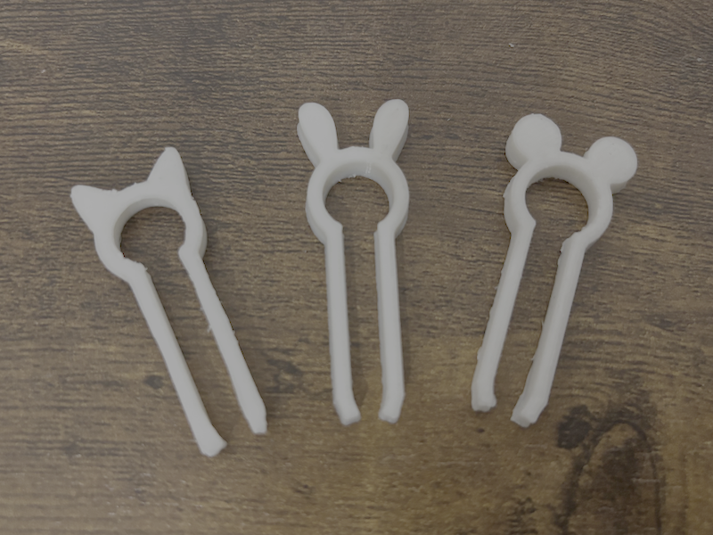
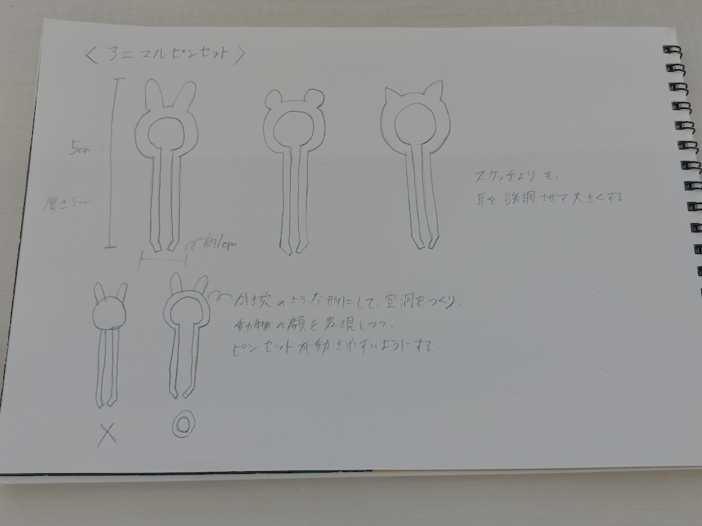

アニマルピンセット


うさぎ、ねこ、くまの耳を取り付けたピンセットを作りました。
動物ごとの特徴がしっかりわかるように形を工夫し、耳がチャームポイントになるように制作しました。
また、シリーズとして並べたときにも統一感が出るようにデザインしました。
初めはうさぎのピンセットだけを作ろうと思っていましたが、他の動物のピンセットも作って、
アニマルピンセットとしてシリーズ化させたらとても可愛いと思ったので、ねことくまのピンセットも制作することにしました。
さらに他の動物のピンセットも作り、コレクションしたら、並べて飾って楽しめると思います！
この作品を作ろうと思った理由
大体、ピンセットは細かい作業をするためのツールとしてに重宝されていて地味なデザインになりがちです。
そこで、使う楽しさを感じられて愛着が持てる可愛らしいピンセットを作りたいと思いました。
実際、ピンセットを作った後、愛着が湧いて、自分の中でとてもお気に入になりました。
制作方法
うさぎとねこの耳はスケッチのフィット点スプラインを使用し、なるべく全体的に丸みが出るように描きました。くまの耳は円を使いました。
耳をチャームポイントにしたいので、顔と同じくらいか顔より大きくスケッチして目立つように描きました。
顔の部分を空洞にした方が、ピンセットが開閉しやすと思ったので鍵穴のような形にしました。
⬇️左右対称で綺麗なうさ耳のスケッチ方法を自分で動画にしたので参考にしてみてください。
⬇️このサイトでもスプラインの使い方が説明されているので参考にすると良いと思います。
設計ファイル